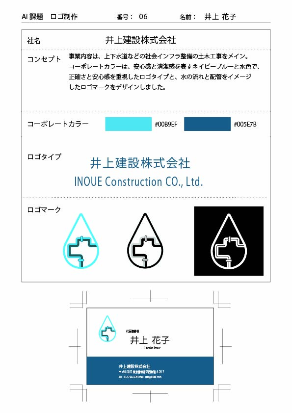
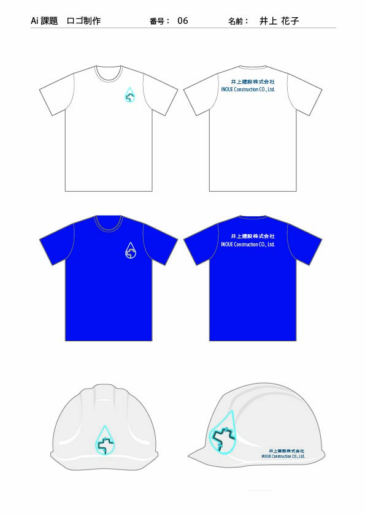

Logo Design
水回り・設備工事会社ロゴ
水回り・設備工事会社を想定したロゴデザインです。
水滴と配管を組み合わせ、事業内容が一目で伝わるシンプルなロゴを目指しました。
概要
水回り・設備工事会社を想定したロゴデザインです。 水滴のシルエットの中に配管モチーフを組み合わせ、事業内容が一目で伝わるシンプルなロゴを目指しました。
制作意図
設備工事や配管工事の専門性を表現しながら、親しみやすく視認性の高いデザインを意識しました。 シンプルな構成にすることで、小さなサイズでも認識しやすいロゴを目指しています。
工夫した点
- 水滴と配管を組み合わせ、事業内容が伝わるシンボルにしました。
- 青系のカラーを使用し、水や清潔感をイメージしています。
- 線幅を統一し、ヘルメットやユニフォーム展開時にも見やすいデザインにしました。
- 小サイズでも視認性が落ちないよう、シンプルな構成に調整しました。
制作範囲
Logo Design
使用ツール
Illustrator
制作資料・展開例

